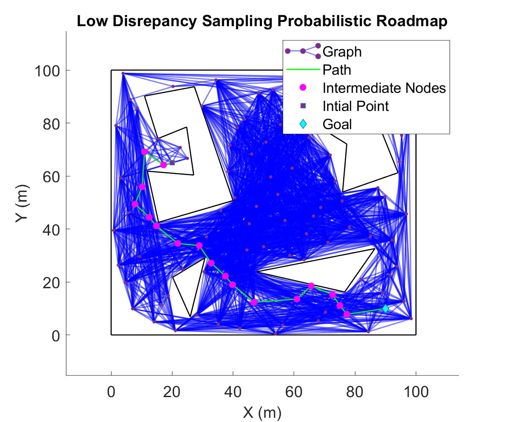

This project was a part of a larger umbrella-project of implenting
motion planning algorithms. Probabilistic Roadmapping (PRM) are
a set of algorithm which combine elements of both probabilistic
reasoning and graph-based methods to generate feasible paths for
a robot to navigate from a starting point to a goal point.
Github Link: https://github.com/pamraat/port-PRM
Notes: To operate this code, you'll need a valid MATLAB license and iRobotCreateSimulator toolbox
which can be downloaded from here.
There are four PRM based methods implemented on the polygon
environment shown in the figure below. Note that the PRM doesn't
guarantee generation of a complete roadmap, and it significantly
depends on complexity of the maps and number of sample points.
The figure below is a uniform sampling based PRM. In this,
the points are randomly generated in free accessible space
and the roadmap is generated by connecting each point to
each point in line of sight. 50 points are sampled in the space.
The figure below is a low discrepancy sampling based PRM. In this,
the points are randomly generated in free accessible space, however,
all the points belong to halton set, which mathematically spans
space with lowest discrepancy. The roadmap is generated by connecting each point to
each point in line of sight. 50 points are sampled in the space.

The figure below is a low discrepancy sampling based PRM. In this,
the points are randomly generated in free accessible space, however,
all the points belong grid-like discretization, which mathematically spans
space with lowest dispersion. The roadmap is generated by connecting each point to
each point in line of sight. 50 points are sampled in the space.
The figure below shows Visibility PRM. Instead of just randomly
sampling in the free space, this algorithm considers the notion of
visibility between sampled points. A new point is accepted
if and only if the new points provides access to new
region of free space which was inaccessible by already existing
tree. This is extremely efficient roadmap, however computationally
expensive.